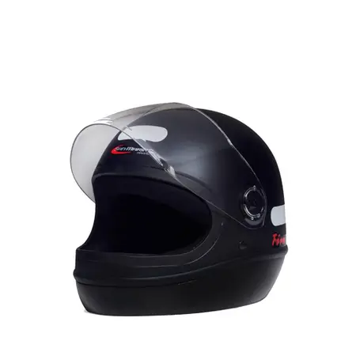
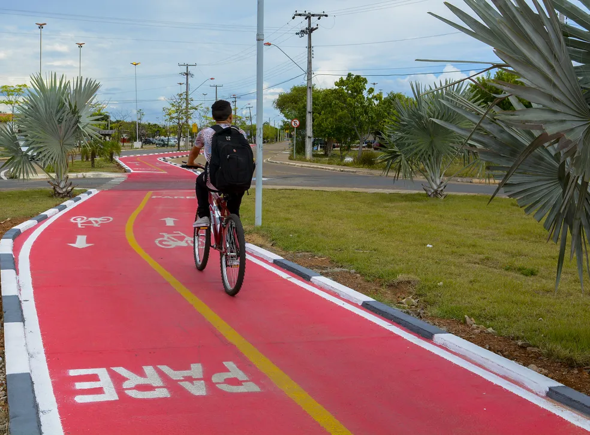
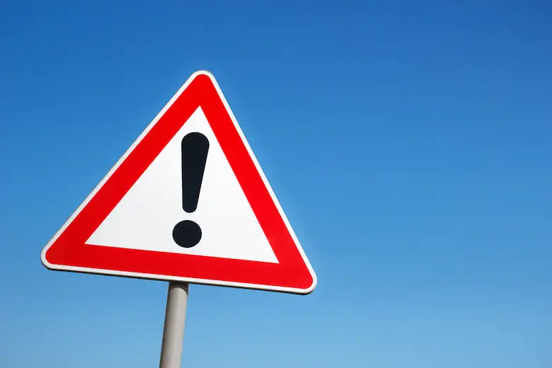
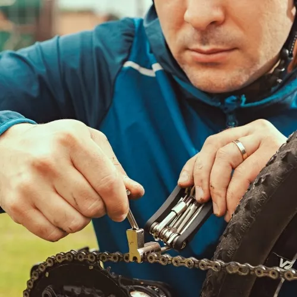
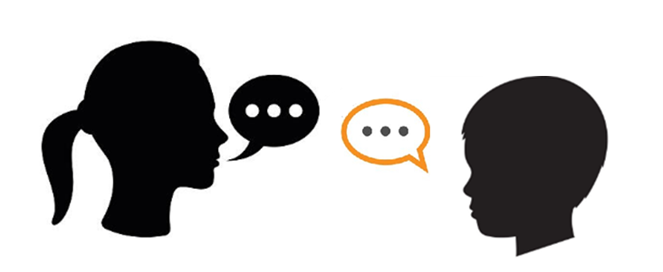

Dicas de Segurança

Use Equipamento de Proteção Adequado

Escolha Rotas com Ciclovias ou Ciclofaixas

Respeite as Sinalizações de Trânsito

Faça Manutenções Regulares na Bicicleta

Promova Conscientização Sobre Segurança